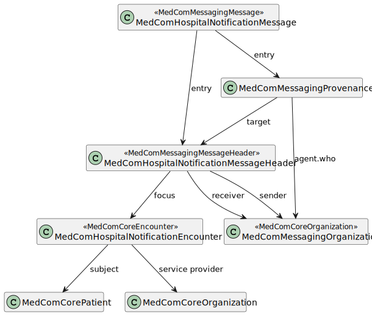

DK MedCom HospitalNotification
2.0.0 - Build CI

DK MedCom HospitalNotification
2.0.0 - Build CI

This page is part of the DK MedCom HospitalNotification (v2.0.0: Release) based on FHIR R4. The current version which supercedes this version is 3.0.0. For a full list of available versions, see the Directory of published versions 
| Official URL: http://medcomfhir.dk/ig/hospitalnotification/ImplementationGuide/medcom.fhir.dk.hospitalnotification | Version: 2.0.0 | |||
| Active as of 2022-10-05 | Computable Name: MedComHospitalNotification | |||
This implementation guide (IG) is provided by MedCom to describe the use of FHIR ®© in message based exchange of data in Danish healthcare.
The IG contains profiles for MedCom HospitalNotification (Dansk: Sygehusadvis), which is used to inform a municipality about hospitalization of a patient. The HospitalNotification contributes to securing the foundation for a coherent clinical pathway across sectors. The specific purpose of the HospitalNotification is to inform the citizen’s current care and health provider in the primary sector about the start and end of the citizen’s stay at the hospital. It makes it possible to pause the current care and health providers’ services during the hospital stay and resume them when it ends. At the same time, the HospitalNotification can trigger the automatic sending of Report of Admission (XDIS16) from the receiver’s system, which gives the health professionals an overview of the citizen’s current services, level of function and health-related problems. The HospitalNotification also contains notification of the patient’s leave from the hospital stay and acute ambulant care.
Profiles used in HospitalNotification are not as open as other profiles because the message is automatically sent and thus not based on a patient consent. The legislation permits this exchange, but the message shall not contain more information than necessary.
More information about the clinical guidelines and legislation can be found here.
The following diagram depicts the structure of the HospitalNotification message.

The HospitalNotification message follows the general MedCom FHIR messaging structure, except that the carbon-copy destination is not allowed. The following sections describe the overall purpose of each profile.
The MedComHospitalNotificationMessage profile constrains the MedComMessagingMessage to further use the MedComHospitalNotificationMessageHeader and to require exactly one patient resource in the message. Furthermore, it constrains the Provenance.activity to contain only activities from the MedComHospitalNotificationMessageActivities ValueSet.
All referenced resources within the message shall be contained in the entry list in MedComHospitalNotificationMessage.
The MedComHospitalNotificationMessageHeader profile constrains the MedComMessagingMessageHeader further to specify the fixed coding for this message and require a focus of the message to be a MedComHospitalNotificationEncounter.
The MedComHospitalNotificationEncounter profile contains the main clinical content of the message. It constrains the MedComCoreEncounter further to require a episodeOfCare-identifier and restricts the status and class to ValueSet of relevant values. The start time of the encounter and a reference to the service provider organization are also mandatory. Most other values are disallowed due to the legislation.
The MedComMessagingProvenance profile is used to track information about the activity of the notification, e.g. if the message describes a ‘start hospital stay - inpatient’ or ‘end leave’. The allowed activity codes for a HospitalNotification message can be found in MedComHospitalNotificationMessageActivityCodes ValueSet on the Terminology IG.
In cases of a previously sent HospitalNotification message, MedComMessagingProvenance references the lateste message which makes it possible to create a historic overview of the admission.
The MedComCorePatient profile is used in a HospitalNotification message. However, a HospitalNotification message may only be exchanged for patients with an official Danish civil person register (CPR)-number.
The MedComCoreOrganization profile is used in a HospitalNotification message to describe the serviceprovider organisation, which is the organisation responsible for the patient’s admission.
The MedComMessagingOrganization profile is used in a HospitalNotification message to describe the sender and primary receiver of the notification. Please notice, that carbon-copy receiver is not allowed in a HospitalNotification message.
The HospitalNotification message contains five timestamps that representes at different times during the patient’s hospital stay and message delivery:
Admitting a patient: When the patient arrives at a hospital, the hospital staff admits the patient and the first timestamp, Encounter.period.start, is registered. Please notice that the Encounter.period.start does not change during the citizen’s hospital stay. Immediately after the hospital staff admits the patient to the hospital, the HospitalNotification for admission is generated and Bundle.timestamp is registered. When the HospitalNotification is sent to the municipality the Provenance.occuredDateTime[x] and Provenance.recorded timestamps are registered. Note that the Provenance.occuredDateTime[x] is a human redable, where Provenance.recorded is a system readable timestamp. The most precise timestamp for the admission is Encounter.period.start.
Discharge a patient: When the patient is ready to be discharged from the hospital, the hospital staff completes the discharge form and the Encounter.period.end is registered. Immediately after the hospital staff completed the discharge form, a HospitalNotification for discharge is generated and the Bundle.timestamp is registered. When the discharge HospitalNotification is sent the municipality the Provenance.occuredDateTime[x] and Provenance.recorded timestamps are registered. The most precise timestamp for the discharge will be Encounter.period.end.
Periods of leave: When a patient is onleave or ends onleave a HospitalNotification message is sent, but no timestamp will be registered in the Encounter resource. Immediately after onleave or ends onleave is registered by the hospital staff, a HospitalNotification message is generated and the Bundle.timestamp is registered. When the onleave or end onleave HospitalNotification message is sent to the municipality the Provenance.occuredDateTime[x] and Provenance.recorded timestamps are registered. The most precise timestamp for onleave or end onleave is Provenance.occuredDateTime[x]. This timestamp has the same data structure as in the timestamp for admitting and discharging a patient, why it is recommended over the Bundle.timestamp and Provenance.recorded.
All profiles shall have a global unique id by using an UUID. Read more about the use of ids here.
The simplified examples contain the required content of a HospitalNotification message. The messages illustrate admission and discharge of an inpatient admission, as well as an cancellation of a messages. The patient, service provider organization, sender and receiver information are identical across a message stream, since all messages are send from a hospital to a municipality.
More examples of a HospitalNotification message can be found here. For examples of a profile, take a look under the tab ‘Examples’ on the site for the given profile.
Please notice, that in the following examples is the Provenance resources listed as an array. This is just an example of an order, resources may be listed in any order.
On MedCom Terminology IG all referenced CodeSystem and ValueSets developed by MedCom can be found.
This IG has a dependency to the MedCom Core IG, MedCom Messaging IG and DK-core v. 2.0.0, where the latter is defined by HL7 Denmark. This is currently reflected in MedComHospitalNotificationMessage, MedComHospitalNotificationMessageHeader and MedComHospitalNotificationEncounter which all inherits from profiles defined in MedComCore or MedComMessaging IG. Further, it is reflected in references to MedComCorePatient, MedComCoreOrganization and MedComMessagingOrganization.
On the introduction page for HospitalNotification the following documentation can be found:
MedComs FHIR profiles and extension are managed in GitHub under MedCom: Source code
A description of governance concerning change management and versioning of MedComs FHIR artefacts, can be found on the link.
In the Quality Assurance report (QA-report) for this IG, there is an error with the following description: Reference is remote which isn’t supported by the specified aggregation mode(s) for the reference (bundled). The error occurs when creating instances of the profiles and is due to some elements having a Bundled flag {b}, however the referenced profile is not included in a Bundle in an instance, since the instance only represents a part of the entire message. This should not influence the implementation by IT-vendors.
MedCom is responsible for this IG.
If you have any questions, please contact fhir@medcom.dk or write to MedCom’s stream in Zulip.
{kind=link}
{kind=link}